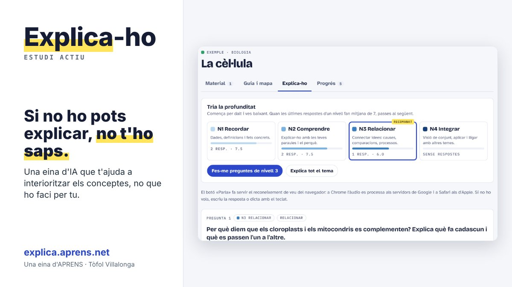

Explica-ho: si no ho pots explicar, no t'ho saps
Presentam Explica-ho, una eina d'estudi actiu d'APRENS que ja es pot fer servir a explica.aprens.net. És una eina d'intel·ligència artificial pensada perquè l'estudiant interioritzi els conceptes, no perquè la IA faci la feina per ell.

Fa anys que faig feina amb estudiants i amb les seves famílies, i molt sovint veig que el problema no és la falta d'hores, sinó la manera d'estudiar: llegir i subratllar dona la sensació de saber-ho, però quan arriba l'examen i s'ha d'explicar amb les pròpies paraules, apareixen els buits. Per mi estudiar és, sobretot, ser capaç d'explicar-ho, i Explica-ho està fet per entrenar justament això.
Si no ho pots explicar, no t'ho saps.
Com funciona
- 1 · MaterialPujes els apunts: fotos del llibre o del quadern, captures, PDF o Word.
- 2 · Guia i mapaLes idees ordenades en un resum, un mapa conceptual i els conceptes clau.
- 3 · Explica-hoPreguntes en quatre nivells. Respons parlant o escrivint i l'eina t'ho valora.
- 4 · ProgrésQuins conceptes tens sòlids i fins a quin nivell de profunditat arribes.
Les preguntes van de menys a més profunditat: recordar (dades i definicions), comprendre (explicar-ho amb les teves paraules i el perquè), relacionar (causes, comparacions, processos) i integrar (la visió de conjunt i lligar-ho amb altres temes). Després de cada resposta et diu què has explicat bé, què t'has deixat i com encaixar-ho, i quan un nivell ja està consolidat et proposa passar al següent.
A Matemàtiques i Física i Química et posa exercicis, semblants als del llibre o agafats dels teus apunts, amb pistes progressives si t'encalles. Els pots resoldre escrivint o amb una foto del paper, i la correcció et diu en quin pas t'has equivocat, quin tipus d'error és i com arreglar-ho. A les llengües combina la teoria per explicar amb exercicis per aplicar-la. La guia de cada tema es pot descarregar en PDF o en Word per repassar-la en paper.
Per a qui és
Està pensada per a estudiants d'ESO i batxillerat, però també serveix per a FP, universitat i oposicions: es poden crear les assignatures que facin falta. Funciona en català i en castellà, des del navegador de qualsevol ordinador, tauleta o mòbil, sense instal·lar res.
Com començar
Sense codi ja pots obrir els temes d'exemple i veure com funciona. Per fer-la servir amb el teu material cal un codi d'accés personal, que es rep amb la subscripció: 6 € al mes, amb 100 peticions (cada guia, ronda de preguntes o correcció compta com una petició). Et pots donar de baixa quan vulguis.
Les respostes les genera una intel·ligència artificial (Claude, d'Anthropic) i es pot equivocar: si alguna cosa no quadra, cal contrastar-ho amb el llibre o amb el professorat. La feina de cada estudiant es guarda al seu dispositiu. Si l'estudiant és menor d'edat, la subscripció la fa el pare, la mare o el tutor legal.
Si en voleu saber més: APRENS Psicologia · C/ Mare de Déu de l'Esperança, 70, 2n · Inca · 636 93 76 61 · info@aprens.es
Tòfol Villalonga
Explica-ho: si no lo puedes explicar, no te lo sabes
Presentamos Explica-ho, una herramienta de estudio activo de APRENS que ya se puede usar en explica.aprens.net. Es una herramienta de inteligencia artificial pensada para que el estudiante interiorice los conceptos, no para que la IA haga el trabajo por él.
Hace años que trabajo con estudiantes y con sus familias, y muy a menudo veo que el problema no es la falta de horas, sino la manera de estudiar: leer y subrayar da la sensación de saberlo, pero cuando llega el examen y hay que explicarlo con las propias palabras, aparecen los huecos. Para mí estudiar es, sobre todo, ser capaz de explicarlo, y Explica-ho está hecho para entrenar justamente eso.
Si no lo puedes explicar, no te lo sabes.
Cómo funciona
- 1 · MaterialSubes los apuntes: fotos del libro o del cuaderno, capturas, PDF o Word.
- 2 · Guía y mapaLas ideas ordenadas en un resumen, un mapa conceptual y los conceptos clave.
- 3 · ExplícaloPreguntas en cuatro niveles. Respondes hablando o escribiendo y la herramienta lo valora.
- 4 · ProgresoQué conceptos tienes sólidos y hasta qué nivel de profundidad llegas.
Las preguntas van de menos a más profundidad: recordar (datos y definiciones), comprender (explicarlo con tus palabras y el porqué), relacionar (causas, comparaciones, procesos) e integrar (la visión de conjunto y relacionarlo con otros temas). Después de cada respuesta te dice qué has explicado bien, qué te has dejado y cómo encajarlo, y cuando un nivel ya está consolidado te propone pasar al siguiente.
En Matemáticas y Física y Química te pone ejercicios, parecidos a los del libro o sacados de tus apuntes, con pistas progresivas si te atascas. Los puedes resolver escribiendo o con una foto del papel, y la corrección te dice en qué paso te has equivocado, qué tipo de error es y cómo arreglarlo. En las lenguas combina la teoría para explicar con ejercicios para aplicarla. La guía de cada tema se puede descargar en PDF o en Word para repasarla en papel.
Para quién es
Está pensada para estudiantes de ESO y bachillerato, pero también sirve para FP, universidad y oposiciones: se pueden crear las asignaturas que hagan falta. Funciona en catalán y en castellano, desde el navegador de cualquier ordenador, tableta o móvil, sin instalar nada.
Cómo empezar
Sin código ya puedes abrir los temas de ejemplo y ver cómo funciona. Para usarla con tu material hace falta un código de acceso personal, que se recibe con la suscripción: 6 € al mes, con 100 peticiones (cada guía, ronda de preguntas o corrección cuenta como una petición). Te puedes dar de baja cuando quieras.
Las respuestas las genera una inteligencia artificial (Claude, de Anthropic) y puede equivocarse: si algo no cuadra, hay que contrastarlo con el libro o con el profesorado. El trabajo de cada estudiante se guarda en su dispositivo. Si el estudiante es menor de edad, la suscripción la hace el padre, la madre o el tutor legal.
Si queréis saber más: APRENS Psicologia · C/ Mare de Déu de l'Esperança, 70, 2.º · Inca · 636 93 76 61 · info@aprens.es
Tòfol Villalonga